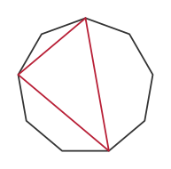
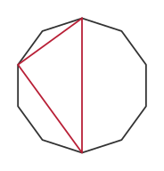
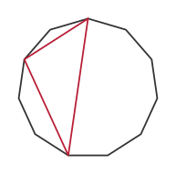

ホーム ＞ 数学A ＞ 場合の数（順列・組合せ）
別冊練習問題 8 の解答 正多角形の頂点でつくる三角形（辺を共有しない）
(1) 正9角形の頂点から3つを選んで三角形をつくる。正9角形の辺を1本も共有しない三角形は何個できるか。
全体
\({}_{9}\mathrm{C}_3=84\) 通り。

辺を2本共有する三角形
隣り合う3頂点 \(9\) 通り。
辺を1本だけ共有する三角形
辺 \(9\) 本のそれぞれに、残りの頂点（その辺の両端と隣り合わない）\(5\) 通り。
\[9\times5=45\]引く
\[84-9-45=30\]【答案】
\[30\]答
(2) 正10角形の頂点から3つを選んで三角形をつくる。正10角形の辺を1本も共有しない三角形は何個できるか。
全体
\({}_{10}\mathrm{C}_3=120\) 通り。

辺を2本共有する三角形
隣り合う3頂点 \(10\) 通り。
辺を1本だけ共有する三角形
辺 \(10\) 本のそれぞれに、残りの頂点（その辺の両端と隣り合わない）\(6\) 通り。
\[10\times6=60\]引く
\[120-10-60=50\]【答案】
\[50\]答
(3) 正11角形の頂点から3つを選んで三角形をつくる。正11角形の辺を1本も共有しない三角形は何個できるか。
全体
\({}_{11}\mathrm{C}_3=165\) 通り。

辺を2本共有する三角形
隣り合う3頂点 \(11\) 通り。
辺を1本だけ共有する三角形
辺 \(11\) 本のそれぞれに、残りの頂点（その辺の両端と隣り合わない）\(7\) 通り。
\[11\times7=77\]引く
\[165-11-77=77\]【答案】
\[77\]答